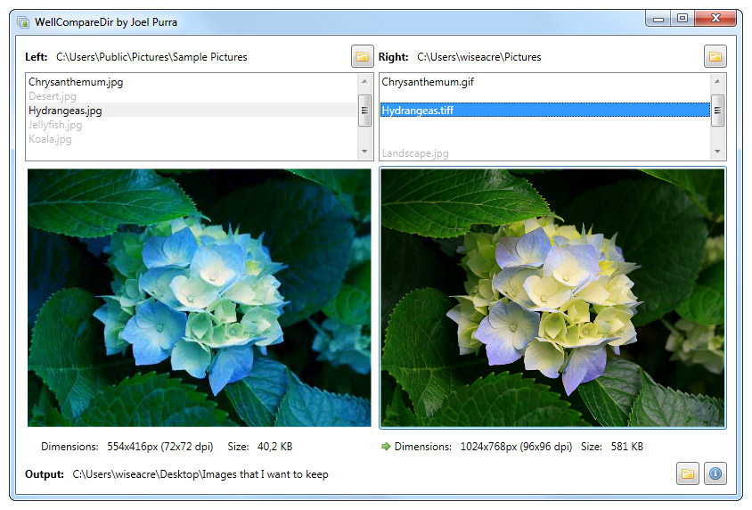

WellCompareDir is a tool to compare and select images with the same name from two folders, and copy to a third folder.
Download and run installation package. A shortcut will be installed, find it from your start menu to run the program.

Screenshot of the main window, showing a "bad image" to the left and a "good image" to
the right. The right file is preferred and will be copied to the output directory.
Use this tool to merge images from two folders to a third, output folder. It is important that the images have the same name if they are considered the same image. Differences in file extensions are ignored.
Speed up your work with shortcut keys, the way WellCompareDir was meant to be used.
A brief summary of the changes from version to version.
Please compile this version from the WellCompareDir source on github.
WellCompareDir was created to sort thousands of product images for Fröer.nu in from several folders. These product images are delivered by the product suppliers in different formats and qualities each year. Replacing one image with the most recent version did not always mean an improvement, and simply relying on file size or image dimensions did not help all of the time. Manual selection was the answer, and a specific tool to achieve this seemed like the most effective way.
WellCompareDir copyright 2010 Joel Purra. Released as free software under the GNU General Public License.
{kind=link}